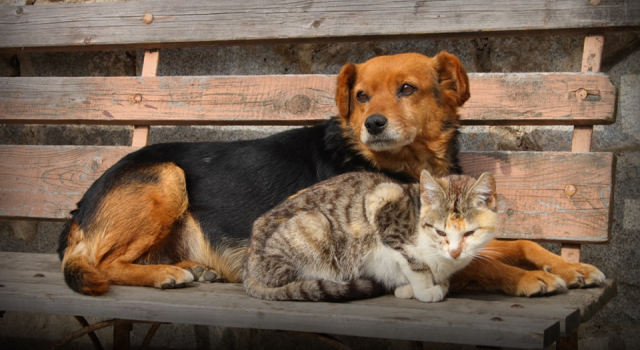

Her köşe başında, bir apartman boşluğunda ya da parkın kuytusunda, sessiz bir bekleyiş var... Gözlerinde bir parça umut, minik kalplerinde kocaman bir sevgi taşıyan dostlarımız onlar. Şehrin karmaşasında unutulmuş, sokaklarımızın masum sakinleri... Uzatacağınız bir el, vereceğiniz bir kap mama, soğuk bir gecede içlerini ısıtan sıcacık bir yuvaya dönüşebilir. Gelin, bu küçük jestlerle onların dünyasında büyük farklar yaratalım.
Devamını Gör

︾
Sizin gibi iyilikseverler sayesinde kampanya başladığından itibaren 4.329 kayıt ile canlara Dokunduk!
Nasıl Katılırım? Bu İyilik Nasıl Büyür?
Sokaklarda yaşayan minik dostlarımız için bir araya geldik! Bu basit adımlarla hem onların karınlarını doyurun hem de bu güzel davranışınızın karşılığını alın:
- CarrefourSA Kart Numaranız veya kayıtlı GSM Numaranız ile gerekli bilgileri vererek kampanyaya ilk adımınızı atın ve mama paketini almaya hak kazanın. (Bilgilendirme SMS ile yapılacaktır).
- Size ulaşan/tanımlanan Purina mamaları ile sokaktaki bir canı besleyin. O anın sıcaklığını hissedin!
- Bu değerli anın fotoğrafını yükleme sayfamızdan bizimle paylaşın.
- Teşekkür olarak, CarrefourSA kartınıza Nestle ürünlerinde geçerli 300 TL değerinde Puan yüklensin ve size SMS ile bilgi verilsin!
Kampanya Paketi İçeriği:
- 🐾 Purina One Orta ve Büyük Irk Yetişkin Köpek Maması 2.5 kg
- 🐾 Purina One Sığır Etli Kuru Kedi Maması 800 g